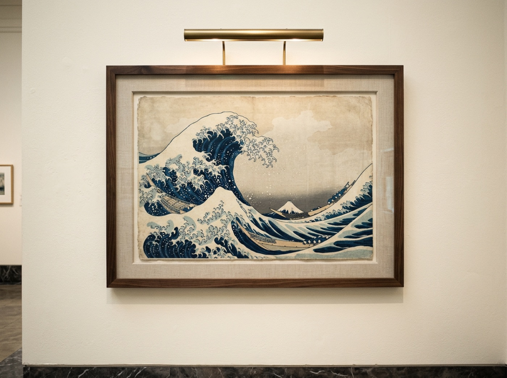
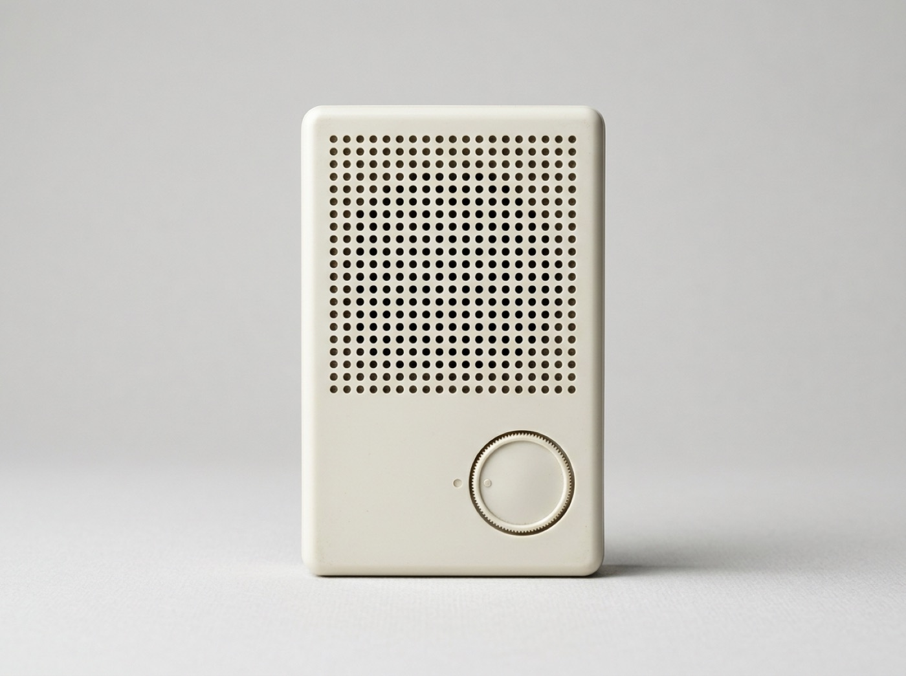
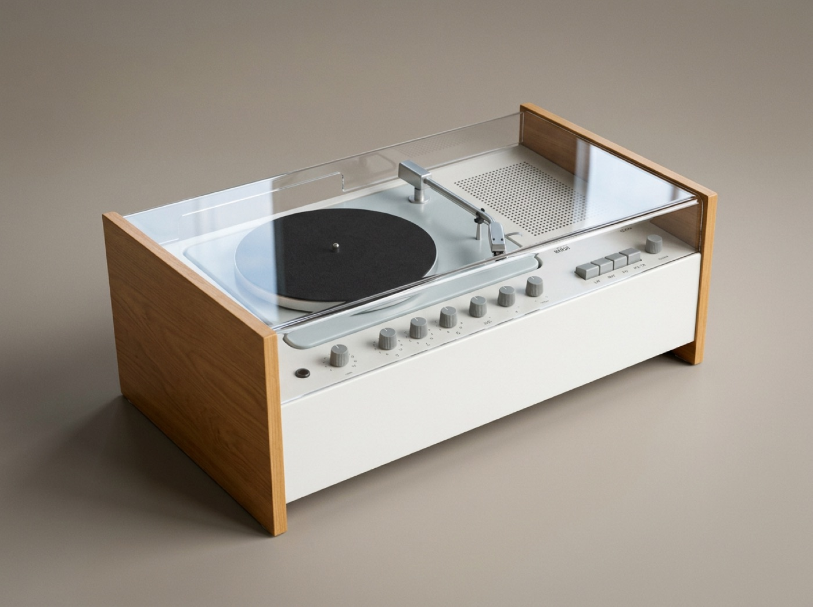
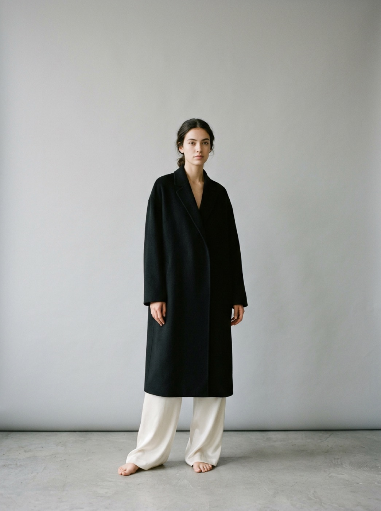

The only daylight enters through a cruciform slit cut floor to ceiling behind the altar. Squint: the dark room reduces to one glowing cross.
Tadao Ando built this chapel from bare concrete and kept it deliberately dark. Daylight enters through a single cruciform slit behind the altar, cut floor to ceiling and wall to wall. Nothing competes with the cross, so the cross needs no decoration.
Every example in this chapter makes the same decision: one statement, everything else subtracted.
The squint test
Painters test a composition by squinting. The blur strips detail and leaves masses of value; whatever still reads is the real structure. Hokusai passes at any radius: wave first, then Fuji, a thumbnail framed dead in the trough.

The wave takes two-thirds of the 25 × 37 cm sheet; Fuji is a thumbnail at the horizon, framed in the trough. Biggest contrast first, then the quiet anchor.
Lissitzky designed for a glance from a moving crowd. Three colors, one diagonal, one event.
Three colors and one vector: the red wedge enters from the left and pierces the white circle on the black field. The message survives any blur.
Thirty words on a white page
In 1998 the major portals stacked a hundred-plus links and banners above the fold. Google shipped about thirty words: a wordmark, one input, two buttons. The input is the only place to land.
Google homepage · 1998. Roughly thirty words on white: wordmark, one input, two beveled buttons. The input is the only landable surface at any blur radius. Catull and Arial approximated with Literata and system fonts. Built live in CSS — inspect it.
Craigslist is the counter-proof. Two hundred links, three colors, no images — and it still passes, because bold headers and column grouping survive the blur. Hierarchy needs order, not emptiness.
- help pages
- avoid scams
- your safety
- best-ofs
- about craigslist
- activities
- artists
- childcare
- events
- general
- groups
- local news
- lost+found
- musicians
- pets
- politics
- rideshare
- volunteers
- apts / housing
- rooms / shared
- sublets / temp
- housing wanted
- housing swap
- office / commercial
- parking / storage
- real estate
- vacation rentals
- automotive
- computer
- creative
- financial
- household
- labor / move
- accounting
- admin / office
- arch / engineering
- art / media / design
- customer service
- education
- food / bev / hosp
- government
- legal
- marketing / pr / ad
- nonprofit
- software / qa / dba
- antiques
- appliances
- auto parts
- barter
- bikes
- books
- cars+trucks
- clothes+acc
- computers
- free stuff
- furniture
- garage sales
Craigslist · 1996. About 200 underlined links in three colors and one face; bold lowercase headers and column grouping carry the whole hierarchy. The layout has survived 25+ years nearly unchanged. Built live in CSS — inspect it.
Priority on a single channel
Clear deleted every button, toolbar, and nav bar. Priority maps to one channel: vertical position, tinted on a heat gradient. The most urgent task is always the topmost, hottest block.
Clear · 2012. No buttons, no chrome: vertical position equals urgency, and the heat gradient makes the hottest task the brightest block. One row shown mid-swipe toward done. Helvetica approximated with system-ui. Built live in CSS — inspect it.
Instruments make the same move with size and position. Porsche set the tachometer dead center and largest in 1964; Apple compressed a whole day into three arcs in 2015. Both read in under a second.
Five dials; the tachometer sits dead center and a third larger, directly in the driver's sightline. The layout held from 1964 to the digital 992.2 in 2024.
Three arcs on true black; the screen dissolves into the bezel. Progress reads by closure alone, and the cyan cap overlapping its own start says complete.
Darkness as a control
Saab took the idea from its fighter cockpits. One button extinguishes every instrument except the speedometer; a darkened gauge re-lights only when it demands action. Subtraction is the feature, not the style.
Saab Night Panel · 1993. Press the button: every gauge goes dark except the speedometer. Toggle low fuel and the hidden gauge re-lights on exception only, decades before focus modes. Built live in CSS — inspect it.
One survivor, for decades
Dieter Rams practiced the same refusal in hardware. The T3's ivory face holds a perforation grid and one dial. The SK4 centers a single black platter and files every secondary control into one quiet row.

Two elements: a uniform perforation grid and one circular dial. Squint and a single circle survives — a layout the 2001 iPod echoed almost 1:1.

One black platter at center; every knob aligned in a single row beneath. The first transparent Plexiglas lid frames the focal point like a vitrine.
The Row built a fashion house on this discipline: one model, one garment story, nothing else in the frame.

One model, one garment story, a seamless grey backdrop, no logos, no jewelry. The frame resolves to a single silhouette at any blur.
The oldest version is the cleanest. The Pantheon's rotunda holds exactly one window, the 8.2 m oculus, and it has directed every visitor's eye for nineteen centuries.
The 8.2 m oculus is the only window in the building; the 43.3 m dome is a perfect sphere. One light source, one place for the eye to go.
If everything is emphasized, nothing is — every view earns exactly one focal point, and the squint test is the judge.
In your systems
Racing-green already states this chapter as a token: one Onda-gold accent, #E8B23A, on deep green panels. Gold is your oculus, and it works only while it stays scarce. Blur a dense Hermes digest at 6px and watch where the brightest mass lands — on the one action you want taken, or spread across tags, rules, and numerals until the page reads like six lit gauges at night? Saab's fix was a button; yours is an audit. Count the gold per view. When the count passes one, decide which instance is the speedometer.
Open one page from any of your five systems and apply filter: blur(6px) to the body in devtools, or just squint hard. Write down the first three things that still read. If the first is not your intended focal point, demote one competitor (smaller, grayer, or gone) and re-blur until it is.
Vocabulary
- The squint test (value blur) — atelier painting practice; brought to UI by Erik Kennedy, Learn UI Design.
- Figure–ground and Gestalt grouping — Max Wertheimer, Laws of Organization in Perceptual Forms, 1923.
- One primary action per screen — Steve Krug, Don't Make Me Think, 2000.
- Data-ink ratio — emphasis through erasure, not addition; Edward Tufte, The Visual Display of Quantitative Information, 1983.
Sources: Wertheimer (1923) · Tufte (1983) · Krug (2000) · Kennedy, Learn UI Design (2017) · MoMA collection records, Braun T3 & SK4.